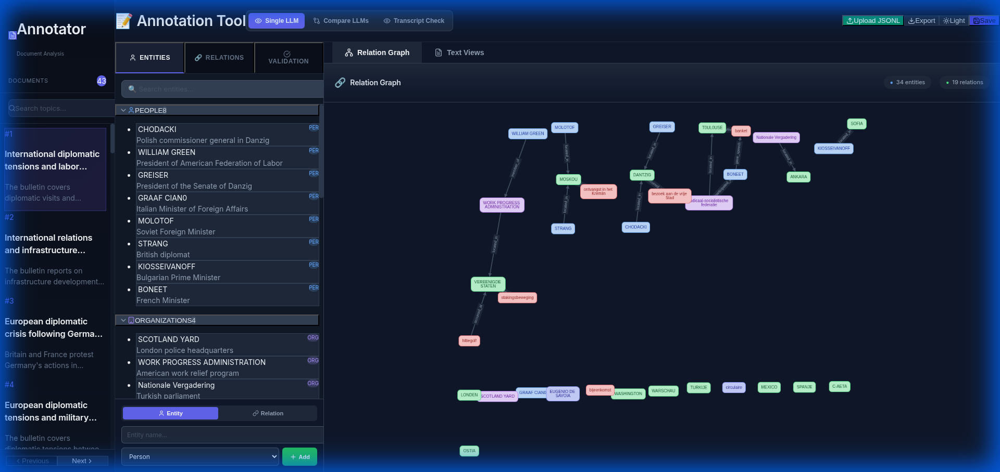
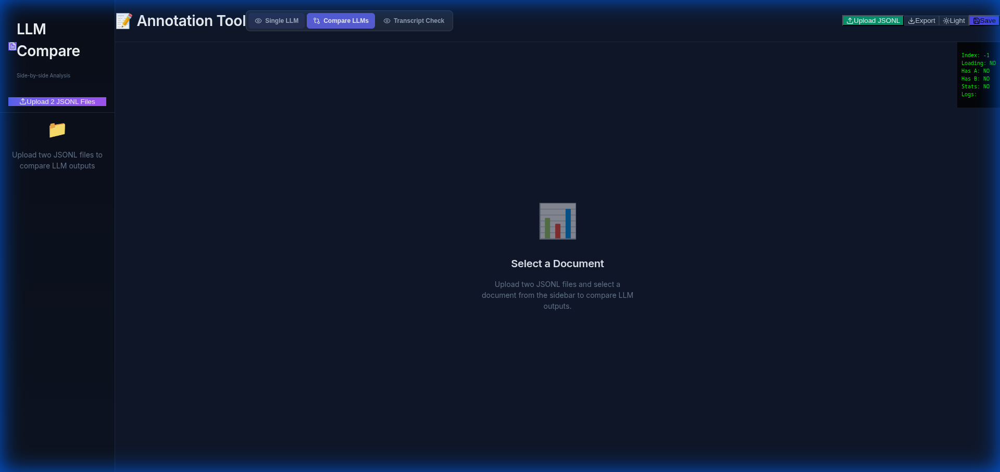
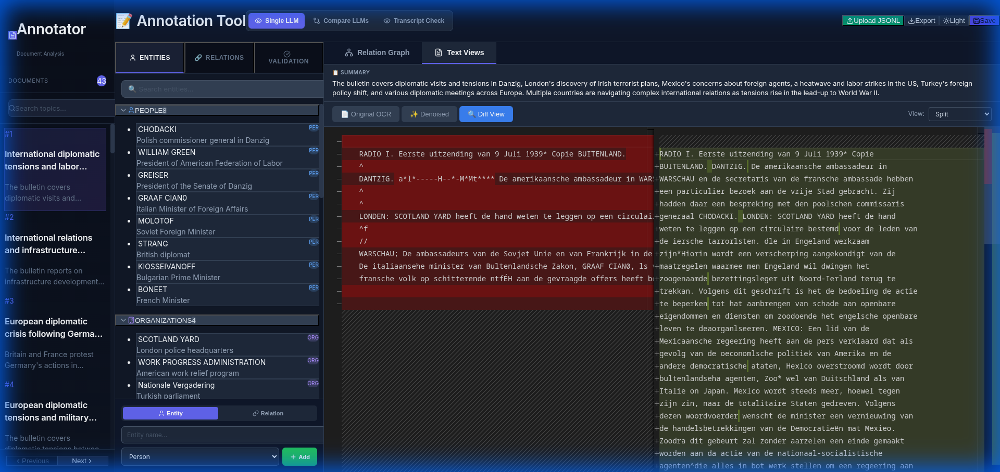

Trust but Verify: A Local Workbench for Auditing LLM Extractions
January 2026 | Category: Tooling / AI / Open Source

Large Language Models (LLMs) like GPT-4 and Claude have revolutionised how we process information. They can read through thousands of pages of documents and extract structured data—names, dates, locations, and relationships—in seconds. But they are not perfect.
For journalists, researchers, and data analysts, "mostly correct" isn't good enough. A hallucinated name in an investigative report or a missed connection in a research paper can undermine the entire work.
That's why I built the Annotation Tool—a privacy-first, local workbench designed to help you audit, correct, and verify the data extracted by LLMs.
Why You Need This Tool
1. The "Human-in-the-Loop" Necessity
You can't blindly trust an LLM's output. You need a way to see the original text side-by-side with the extracted data. This tool provides a clean interface to review every entity and relation, ensuring your dataset is accurate.
2. Compare Multiple Models
Is GPT-4 better than Mistral for your specific documents? This tool allows you to load outputs from different models and compare them directly. You can see where they agree and where they diverge, helping you pick the best results or combine them for higher accuracy.
3. Privacy First
Investigative journalism and sensitive research often involve confidential documents. Cloud-based tools are a risk. This tool runs entirely on your laptop. Your documents and data never leave your machine.
A Tour of the Workbench
The Dashboard
When you open the tool, you get an overview of your document collection (bulletins). You can quickly navigate through them and see the status of your extraction tasks.
Verifying Extractions
The core of the tool is the Bulletin View. On the left, you have the original text (or OCR output). On the right, you have the structured entities and relations extracted by the LLM.
You can:
- Click on an entity to highlight it in the text.
- Edit typos or incorrect categorisations.
- Add missing entities that the LLM missed.

Comparing Transcripts & Models
Sometimes the OCR itself is the problem, or different models generate different transcripts. The Diff View allows you to compare two versions of text side-by-side. This is perfect for:
- Comparing the raw OCR against a "cleaned" version generated by an LLM.
- Comparing the outputs of two different LLMs to see how they interpreted the document.

Creating Ground Truth
By correcting the LLM's mistakes, you are effectively creating a Ground Truth dataset. This "gold standard" data is invaluable. You can use it to:
- Fine-tune smaller, cheaper models to perform as well as the giants.
- Benchmark new models as they are released.
- Publish verified datasets with confidence.
Getting Started
This tool is open-source and free to use. It requires a simple setup with Python and Node.js.
- Clone the repository.
- Start the backend (FastAPI) to handle your data.
- Start the frontend (React) to launch the interface.
Detailed instructions are available in the README.
Conclusion
AI is a powerful assistant, but it's not a replacement for human judgment. This Annotation Tool gives you the best of both worlds: the speed of AI extraction with the precision of human verification.
Ready to take control of your data? Download the tool today.
About the author: Mohammad Imam — researcher working on interpretable and resource-efficient machine learning. Learn more on the personal site.